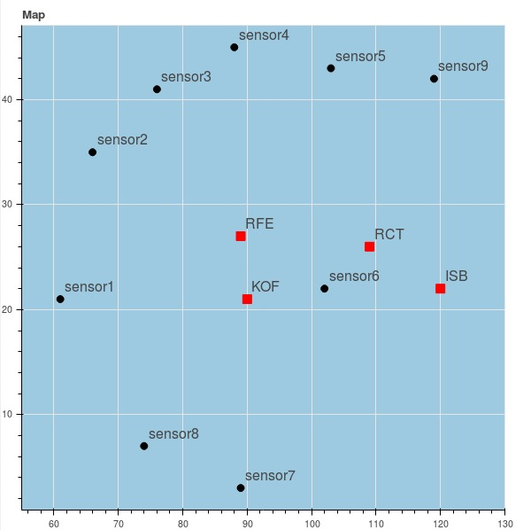
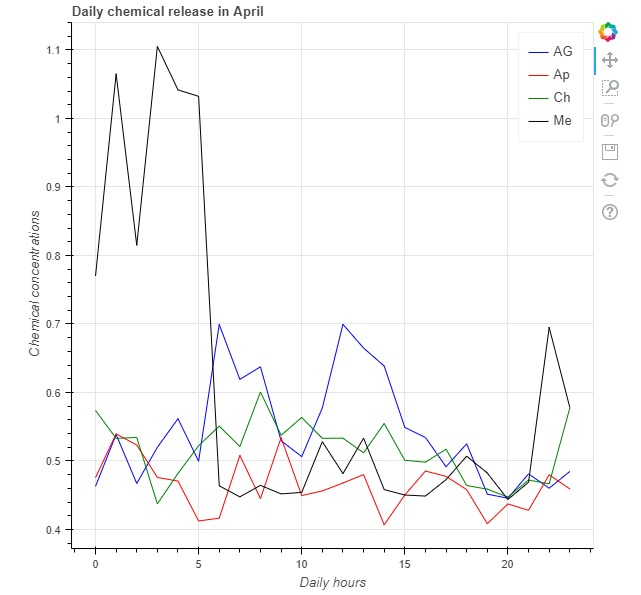
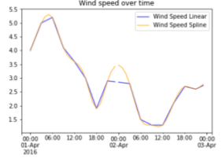
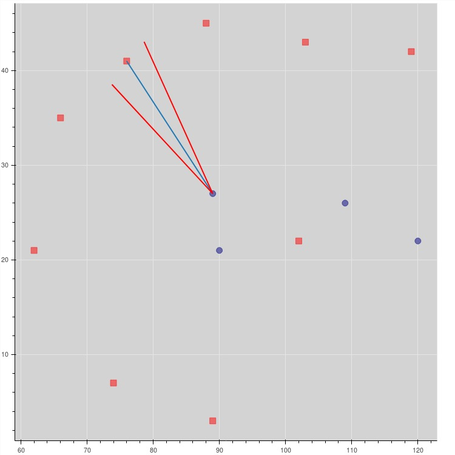
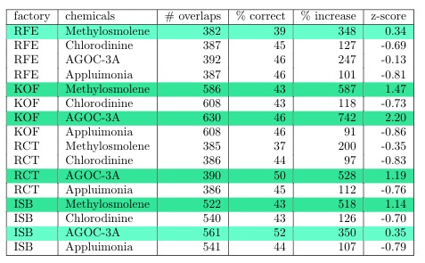

Analysis of Chemical Emissions
map AG behaviour over time Cumulative plot Chemicals Over Wind windspeed Chemicals linked to factoryMap of the sensors and factories. The sensors measure te chemical abundancy of Appluimonia, Chlorodine, AGOC-3A, Methylosmolene.

1. Are all the sensors working properly at all times? Are there any un-
expected behaviors of the sensors through analyzing the readings they
capture?
2. Which chemicals are being detected by the sensor group? What patterns
of chemical releases can be seen?
3. Which factories are responsible for which chemical releases?
AG behaviour over time: In order to take a first look at the consistency in readings of the sensors, a scatterplot has been made for each sensor-chemical pair. AG (AGOC-3A) abundancy (blue) at the sensors and their average measurement per month (black)
Cumulative abundancy for each chemical, for each sensor.
Hourly abundency.
Abundancy of each chemical over wind speed.
Windspeed over time.
Expected area of measurement.
Chemicals linked to factory.

Using the insights gained during this analyses we can draw the following conclusions:
1: Sensor 3, 4, 5 and 9 are most likely dysfunctional.
2: The factories are not producing at all times, especially the factories producing Methylosmolene appear to have very specific production hours
3: The most likely chemical-factory pairs are:
RFE - None
KOF - Methylosmolene and AGOC-3A
RCT - AGOC-3A
ISB - Methylosmolene
{kind=link}
{kind=link}
{kind=link}
{kind=link}
{kind=link}